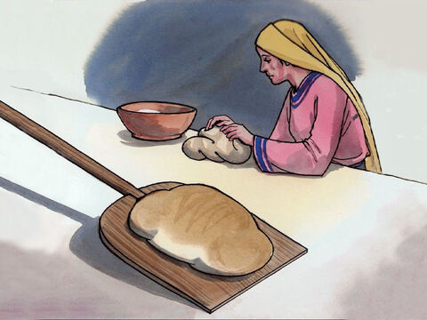
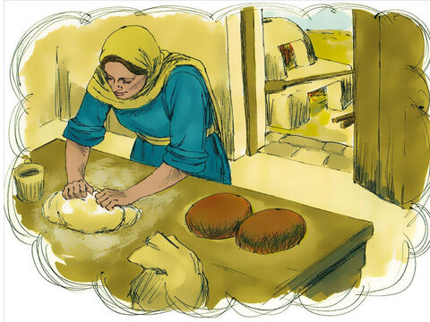

The Parable Of The Yeast
He told them still another parable: “The kingdom of heaven is like yeast that a woman took and mixed into about sixty pounds of flour until it worked all through the dough.”
Jesus spoke all these things to the crowd in parables; he did not say anything to them without using a parable.
So was fulfilled what was spoken through the prophet:
“I will open my mouth in parables,
I will utter things hidden since the creation of the world.” - Psalm 78:2
Matthew 13:31-32
- 
- 